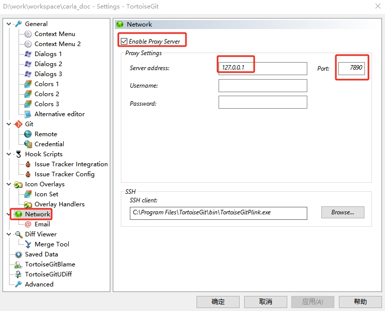

从源代码构建 Carla
用户可以从源代码构建 Carla 以用于开发目的。如果您想要向 Carla 添加额外的特性或功能，或者想要使用虚幻编辑器创建资源或操作地图，则建议您这样做。
构建说明适用于 Linux 和 Windows。您还可以在 Docker 容器中构建 Carla，以便部署在 AWS、Azure 或 Google 云服务中。访问 Carla GitHub 并克隆存储库。
注意
这些构建指南都是针对 Carla 的虚幻引擎4.26版，如果想要构建 Carla 的虚幻引擎5.5版，请访问 该版本的正确构建指南 。
带Carla插件的虚幻编辑器可执行版本
根据 CarlaUE4链接 或 CarlaUE5链接 下载所需版本的文件，解压后运行 launch_*.bat 就可以启动带Carla插件的虚幻编辑器。
注意
CarlaUE5编辑器正常运行至少需要 8GB 显存。
科学上网
参考其中的一个链接进行科学上网的订阅和环境配置：链接1 、链接2 、链接3 、链接4 。
比如使用Clash，首先在配置页面下根据订阅链接进行下载，然后在常规页面开启系统代理，最后测试是否可以正常科学上网。
Ubuntu 下的配置
首次启动clash，会新建文件~/.config/clash/config.yaml：
cd $HOME/.config/clash/
 将Clash中的订阅地址写入
将Clash中的订阅地址写入config.yaml文件。
打开 Ubuntu 的“设置”管理，在“网络”内将“网络代理”的“自动”改为“手动”，根据以下内容进行填写 HTTP、HTTPS 和 Socks 地址
# HTTP 代理
127.0.0.1:7890
# HTTPS 代理
127.0.0.1:7890
# Socks 主机
127.0.0.1:7891
TortoiseGit 网络代理配置
如果使用TortoiseGit作为git的图形化界面软件，首页在文件资源管理器空白位置右键，选择TortoiseGit->Setting，然后在弹出的界面进行如下配置：

VScode C++开发调式环境配置
1.下载software/gcc/x86_64-8.1.0-release-win32-seh-rt_v6-rev0.7z文件到本地并解压
2.将mingw64/bin/路径添加到PATH路径，使用命令gcc -v验证配置已生效；
CI/CD
-
官方CI/CD 链接 （西班牙 加泰罗尼亚的IP）。